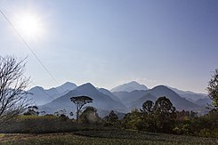

Bosque Nuboso
Un bosque nuboso, selva nubosa o nebliselva, es generalmente un bosque húmedo montano tropical o subtropical, que se caracteriza por una alta concentración de niebla superficial, usualmente a nivel de la canopea. Los bosques nubosos se agrupan dentro de la denominada Pluvisilva.
Los siguientes parques nacionales cuentan con nubliselva:
•Parque nacional Cerro Azul Meambar:
•Parque nacional Montecristo
•Refugio de vida silvestre Montaña Verde
•Parque nacional Montaña Santa Bárbara
•Parque nacional Cusuco
•Parque nacional Pico Pijol
•Refugio de vida silvestre Texiguat
•Parque nacional Pico Bonito
•Parque nacional La Tigra
